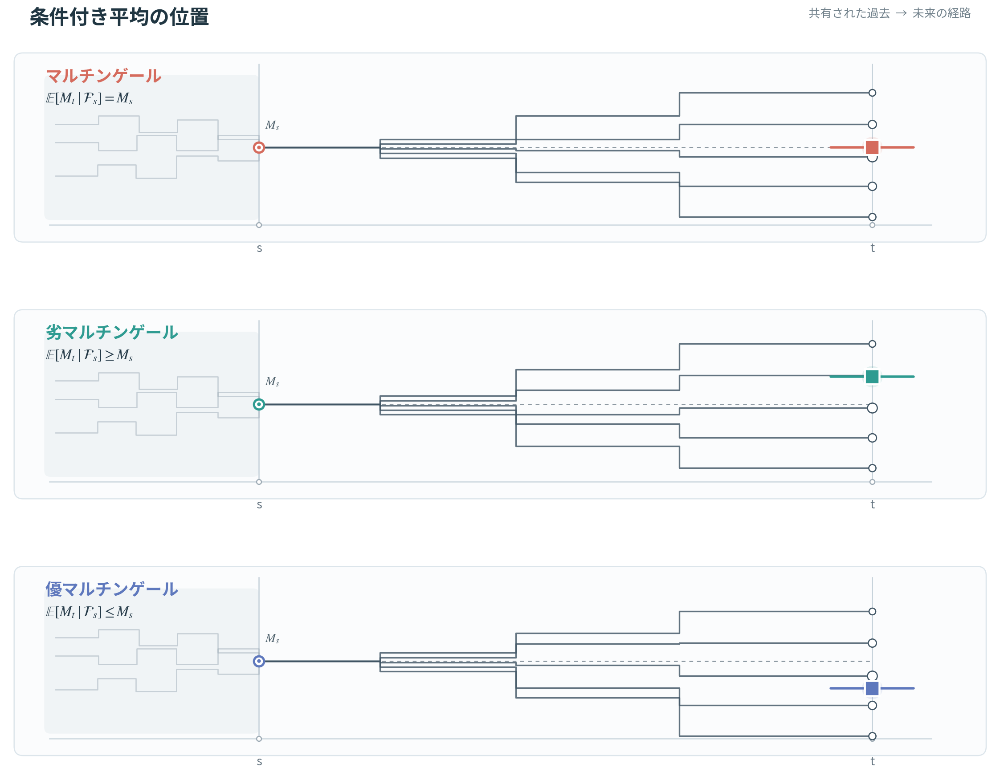

確率過程論の概要(2)
フィルトレーション
\sigma-加法族はすなわち情報であり，確率過程を考える場合には，情報が時間と共にどう変化していくかを定式化しておくことが重要となる．\mathcal Fが我々の知り得る全情報であるから，限定された時刻までに得られる情報は\mathcal Fの部分\sigma-加法族として表されることとなる．さらに時間の流れが逆光のできないものであるという前提のもとでは，そのような情報は時間変数の増加とともに増加していくと考えられることになる．このような観点に立って，次のような定義を与える．
定義：フィルトレーション，適合
時間パラメータt \in Tに依存する\mathcal Fの部分\sigma-加法族の族\{ \mathcal F; t\in T \}が s<t \quad \Rightarrow \mathcal F_s \subset \mathcal F_t を満たすとき，増大情報系あるいはフィルトレーションという．
確率過程Xについて，x_t(\omega)がtを固定するごとに\mathcal F_t可測となっているとき，Xはフィルトレーション\{ \mathcal F_t ; t \in T \}に適合している，あるいはXを\{ \mathcal F_t ; t \in T \}に関して適合過程であるという．
なお以下では\{ \mathcal F_t ; t \in T \}は単に\{\mathcal F_t\}と略記する．
適合性が成立していることを因果的という表現で呼ぶ． 確率過程を論じるには，確率空間にフィルトレーションを加えた４つの組 (\Omega, \mathcal F, P ; \{\mathcal F_t\})を常に想定しておかなければならない．これを，フィルター付き確率空間とよぶ．
確率過程について連続あるいは右連続といった特性があるように，フィルトレーションにも連続性という概念がある．
時刻tまでの情報よりも大きな情報全ての共通部分をとって得られる集合\bigwedge_{n = 1}^{\infty} \mathcal F_{t + \frac{1}{n}}を\mathcal F_{t+}で表して，\mathcal F_tの右極限とよび，
対照に時刻tまでの情報よりも小さな情報の総和により得られる\bigvee _{n = 1}^\infty \mathcal F_{t - \frac{1}{n}}を\mathcal F_{t-}で表して\mathcal F_tの左極限とよぶ．
なぜ\mathcal F_{t + \frac{1}{n}}や\mathcal F_{t - \frac{1}{n}}ではいけないのか？それぞれ情報を含んでいるのでは？ いや，それは正しいが，収束という概念を集合族で書いたら，上のようになるだけである．（と思われれる．）
\mathcal F = \mathcal F_{t+}となるとき右連続，\mathcal F = \mathcal F_{t-}となるとき，左連続とよぶ．右連続かつ左連続ならフィルトレーション\{F_t\}は連続であるという．
また時間パラメータ集合がT = [0,\infty)である場合は，\mathcal F_\infty = \bigvee _{n = 1}^\infty \mathcal F_{n} により全時間区間に渡っての情報が必要となることが分かる．もちろん，この情報が我々の知り得る全情報を上回ることは無いので\mathcal F_{\infty} \subset \mathcal Fである．
確率過程がフィルトレーションを生成するという考え方を導入しておくと便利である．まず，離散時間パラメータT = \{ 0,1,... \}の場合は次のように定義される．
定義：確率過程から生成されるフィルトレーション（離散）
X_0,X_1 , ...,X_nから生成される\sigma-加法族，すなわちX_0,X_1, ...,X_nをすべて可測とする最小の\sigma-加法族\sigma(X_0,X_1, ..., X_n)を\mathcal F^X_nと表し，この集まり \{\mathcal F^X_n\}を，確率過程X = \{X_n\}が生成するフィルトレーションと呼ぶ．
また連続時間の場合は次のように定義する．
定義：確率過程から生成されるフィルトレーション（連続）
時刻tまでの確率過程Xの挙動\{ X_s(\omega) ; 0 \le s \le t\}をすべて可測とする\sigma- 加法族を\sigma (X_s ; s \le t)と表す．これを右連続化したものを\mathcal F^X_tと表すとき，それれらの集まり\{ \mathcal F^X_t \}を確率過程X = \{ X_t \}により生成されるフィルトレーションとよぶ．
マルチンゲール
マルチンゲールとは，増分が互いに統計的に独立になるような性質を有する確率過程を，条件を緩くして拡張した確率過程である．数学的観点からの確率微分方程式論は，マルチンゲールの概念に立脚して構成されていると言っても過言ではないので，マルチンゲールの概念を理解しておくことは重要である． 以下ではフィルター付き確率空間(\Omega, \mathcal F, P ; \{\mathcal F_t\})が与えられているものとする．
独立増分過程
サイコロを振りながらマス目を進んでいくゲームにおいては，次にどのマス目に進むかは，現在いるマス目によって異なってくるため，nステップ後の位置と(n + 1)ステップ後の位置とは統計的に独立とはなりえない．しかし進むマス目が出た目のみに依存するゲームであれば，各ステップごとの「増分」は互いに独立となるはずである．
例えばサイコロを振って，その出た目の数だけ前に進むすごろくを考える． n回目のサイコロの目をX_nとすると，n回振ったあとの位置S_nは S_n = X_1 + X_2 +\cdots + X_n となる．したがって増分は S_{n + 1} - S_n = X_{n+1} となる．確かにこの確率過程は位置そのものは独立ではない一方，各ステップの増分 S_1 - S_0 , S_2 - S_1 , ... は互いに独立である．
このように，増分が互いに独立となるという性質を保ちながら変動していく確率過程は，あとに述べる確率微分方程式を論じる上で極めて重要な役割を演じる．
定義：独立増分
確率過程Xにおいて，互いにかさらない時間区間での増分が統計的に独立となるとき，すなわち時間区間の分割t_1 < t_2 < t_3 ,...に対して各区間での増分X_{t_2} - X_{t_1},X_{t_3} - X_{t_2} , ...が統計的に独立となるとき，確率過程Xは独立増分をもつという．
独立増分をもつ確率過程のことを簡単に独立増分過程ともいう．この定義から，Xの生成するフィルトレーションを \{ \mathcal F^X_t \}とするとき，t> sに対してX_t - X_sは常に\mathcal F^X_sと独立となる．
確率変数と情報が独立であるとは，確率変数からなる情報とその対象としている情報が独立しているということである．すなわち P(\{ X_t - X_s \in B \} \cap A) = P(X_t -X_s \in B)P(A), \quad \forall A \in \mathcal F^X_s , \forall B \in \mathcal B(\mathbb R) を満たしているということである．
Xが独立増分を持ち，かつ可積分であれば，\mathbb E[X_t - X_s | \mathcal F_s^X] = \mathbb E[X_t] - \mathbb E[X_s]がt >sに対して成立する．このことから次の定理は明らかである．
独立増分過程Xが可積分のとき，その平均が一定であれば，\{ \mathcal F^X_t \}をXが生成するフィルトレーションとして，次式が成立する． \mathbb E[X_t - X_s | \mathcal F^X_s] = 0 ,\quad(t > s)
次に述べるマルチンゲールはこれを拡張したものである． ## マルチンゲール
定義
i)可積分なcadlag過程M = \{ M_t; t \in T \}が\{ \mathcal F_t \}に適合(X_tが\mathcal F_t-可測)していて \mathbb E[M_t | \mathcal F_s] = M_s \quad(\text{a.s.}) ,\quad(t > s) を満たすとき，Mを\{ \mathcal F_t \}に関するマルチンゲールという．
ii)上の等号を\geに置き換えたものを劣マルチンゲール，\le に置き換えたものを優マルチンゲールという．
フィルトレーション\{ \mathcal F_t \}を明記しなくても特に混乱が生じない場合，あるいは\{ \mathcal F_t \}がM自身の生成するフィルトレーションである場合は，単にマルチンゲールと呼ぶことも多い． 以下では特に断らない場合，フィルトレーション\{ \mathcal F_t\}を明記せずに単にマルチンゲールと呼ぶこととする．

例を見ていく． Yを可積分な実確率変数だとして，Yをフィルとレーションから確率過程Xを X_t = \mathbb E[Y | \mathcal F_t] \quad (t \in T) と定める．t > sとすると，\mathcal F_s \subset \mathcal F_tであるので． \mathbb E[X_t | \mathcal F_s] = \mathbb E[\mathbb E[Y | \mathcal F_t] | \mathcal F_s] = \mathbb E[Y | \mathcal F_s]= X_s なのでXはマルチンゲールである．（式変形は[[学習/Zawa25721_documents/Published/StochasticDifferentialEquations/4|4]]を参考に，塔の性質はここで使われるのか！） これの定性的意味は，最終的に知りたい量Yについてその時点までに得た情報で作った予想を，時間と共に更新していくと，その予想値の過程はマルチンゲールになるというものである．
また，期待値をとると，マルチンゲールの平均は一定となることが分かる．同様の理由により，劣マルチンゲールの平均はtの増加関数となり，対して優マルチンゲールの平均は減少関数となる．
マルチンゲールは公平な賭けを数学的に表現したものであると言われる．この理由は，上記の定義よりも，つぎの定義のほうがわかりやすく表しているかもしれない．
可積分な\{\mathcal F_t\}適合過程Mがマルチンゲールであるための必要十分条件は \mathbb E[M_t - M_s | \mathcal F_s] = 0 \quad(\text{a.s.}) \quad(t>s) が成立することである．
これらの定理から，次の結果を得ることができる．
独立増分過程Xが可積分でその平均が一定であるなら，Xは自身の生成するフィルトレーション\{ \mathcal F^X_t \}に関してマルチンゲールである． 逆は必ずしも成立しない．
ここで重要なのは，独立増分でなくとも，マルチンゲールを満たすことはあるというものである．単に過去の情報を知っていて，その未来の増分の条件付き期待値が0であればよいのである．
二乗可積分マルチンゲールと二次変分過程
確率微分方程式の解を構成するには，確率過程を時間について積分するという操作が必要であるため，マルチンゲール，あるいはそれに関連する確率過程の積分について数学的な意味付けを与えなければならない．
よく知られているように，古典的なRiemann-Stieltjesの意味での積分が可能となる条件は，被積分関数の有界変動性である． Riemann-Stieltjes積分というのは
W = \int_0^T F(t) d x(t)
のような積分である．上の積分は仕事の定義である． 例えば確率過程については次のような例が考えられる． 株価をS_t，時刻tに保有している株数をH_tとする．ある期間における損益は
G_T = \int_0^T H_t d S_t
のように計算される．このような計算を行いたいのである． （参考：https://mathlandscape.com/bdd-variation/ ） これは確率過程の場合も同様で見本関数ごとに時間積分を構成していくには，見本関数の有界変動性があれば，特に深刻な困難さは発生しない．有界変動関数とは，簡単に言えば，増加関数と減少関数の差によって表現し得る関数である．
（参考：https://mathlandscape.com/bdd-variation/ ） これは確率過程の場合も同様で見本関数ごとに時間積分を構成していくには，見本関数の有界変動性があれば，特に深刻な困難さは発生しない．有界変動関数とは，簡単に言えば，増加関数と減少関数の差によって表現し得る関数である．
連続な単調増加関数は，有界変動であり，あるいは連続でなくても単調増加関数が有界であれば，有界変動となる．単調減少についても同様である．
しかし，後に明らかになるように，連続時間確率過程が独立増分性，あるいはそれを拡張したマルチンゲール性を持つ場合は，そのような有界変動性を一般には持ち得ないため，積分を定義する上で非常に大きな障壁となってしまう．
したがってRiemann-Stieltjes積分のアプローチが有効な過程と，そうでない特別なアプローチが必要となる過程は区別しておく必要がある．
そこで次のような定義を導入する． #### 定義：増加過程，減少過程，有界変動過程 i)フィルトレーション\{ \mathcal F_t \}に適合しているcadlag過程X = \{ X_t; t\in T \}がX_0 = 0 (\text{a.s.})を満たし，かつその見本関数がほとんど確実に増加関数となるとき，増加過程といい，減少関数となるとき，減少過程という．
- X^{(1)} = \{X_t^{(1)};t \in T\},X^{(2)} = \{X_t^{(2)};t \in T\}を増加過程として， X_t = X_t^{(1)} - X_t^{(2)}と表されるような過程X =\{ X_t ; t \in T \}を有界変動過程という．
増加過程とマルチンゲールの和は劣マルチンゲールであり，減少過程とマルチンゲールの和は優マルチンゲールとなる．
多くの応用研究に登場するマルチンゲールはさらに二乗可積分である．このようなマルチンゲールを二乗可積分マルチンゲールという．あるいはL^2マルチンゲールという．
分解されることを例として見ていく．
MをL^2マルチンゲールとする．このときt > sとして， \begin{align} \mathbb E[M^2_t - M^2_s | \mathcal F_s] &= \mathbb E[(M_t - M_s)^2 | \mathcal F_s] + 2M_s\mathbb E[M_t - M_s | \mathcal F_s]\\ &=\mathbb E[(M_t - M_s)^2 | \mathcal F_s] \\ &\ge0 \end{align} となるので，まずM^2は劣マルチンゲールになることが分かる． M_t^2を増分の和の形で表現することにする． 時間を分割して考えると \begin{align} M^2_t &= \sum_i^n (M^2_{t_i} - M^2_{t_{i-1}}) \\ &= \sum_i^n (M_{t_i} - M_{t_{i-1}})^2 + 2\sum_i^n M_{t_{i-1}}(M_{t_i} - M_{t_{i-1}}) \end{align}
第一項は，非負を足し合わせていくので，非減少過程（広い意味の増加過程）である．
第二項について考える． 第二項だけをとってきて \mathcal F_{t_k}を条件にした条件付き期待値をとると， $$ \begin{align} & \mathbb E\left[ \left . 2\sum_i^n M_{t_{i-1}}(M_{t_i} - M_{t_{i-1} } ) \right| \mathcal F_{t_k} \right ] \\ &= 2\sum_{i =1}^k \mathbb E\left[ \left . M_{t_{i-1}}(M_{t_i} - M_{t_{i-1} } ) \right| \mathcal F_{t_k} \right ] + 2\sum_{i =k+1}^n \mathbb E\left[ \left . M_{t_{i-1}}(M_{t_i} - M_{t_{i-1} } ) \right| \mathcal F_{t_k} \right ] \\ &= 2\sum_{i =1}^k \mathbb E\left[ \left . M_{t_{i-1}}(M_{t_i} - M_{t_{i-1} } ) \right| \mathcal F_{t_k} \right ] + 2\mathbb E\left[ \left . M_{t_{k}}(M_{t_{k +1}} - M_{t_{k} } ) \right| \mathcal F_{t_k} \right ] + 2\sum_{i =k+2}^n \mathbb E\left[ \left . M_{t_{i-1}}(M_{t_i} - M_{t_{i-1} } ) \right| \mathcal F_{t_k} \right ] \end{align} まず第二項について，$M_{t_k}$は$\mathcal F_{t_k}$-可測なので E=M_{t_{k}} E$$
である．マルチンゲール性により，0となることが分かる．
次に第三項について考える $$
2_{i =k+2}^n E
$$
塔の性質を用いて \mathbb E\left[ \left . M_{t_{i-1}}(M_{t_i} - M_{t_{i-1} } ) \right| \mathcal F_{t_k} \right ] = \mathbb E[\mathbb E[ M_{t_{i-1}}(M_{t_i} - M_{t_{i-1} } ) | \mathcal F_{t_{i-1} }] | \mathcal F_{t_k}] となる．可測性を用いると \mathbb E[\mathbb E[ M_{t_{i-1}}(M_{t_i} - M_{t_{i-1} } ) | \mathcal F_{t_{i-1} }] | \mathcal F_{t_k}] = \mathbb E[M_{t_{i-1}}\mathbb E[ (M_{t_i} - M_{t_{i-1} } ) | \mathcal F_{t_{i-1} }] | \mathcal F_{t_k}] これはマルチンゲール性により，内側の条件付き期待値が0になる．よって全体の条件付き期待値も0となり，第三項も０となることが分かる．
すなわち \mathbb E\left[ \left . 2\sum_i^n M_{t_{i-1}}(M_{t_i} - M_{t_{i-1} } ) \right| \mathcal F_{t_k} \right ] = 2\sum_{i =1}^k \mathbb E\left[ \left . M_{t_{i-1}}(M_{t_i} - M_{t_{i-1} } ) \right| \mathcal F_{t_k} \right ] が成立するので，2\sum_i^n M_{t_{i-1}}(M_{t_i} - M_{t_{i-1}})はマルチンゲールである．
よって劣マルチンゲールが増加過程とマルチンゲールの和に分解できることが実例から実感できた．
以上の考察から，次の定義を与えることにする
定義：二次共変分過程
X,Yをともに二乗可積分なマルチンゲールとし，各t \in Tに対して時間区間の分割を 0 = t_0 <t_1 \cdots<t_n = t , \quad |\delta| = \max_{1\le i\le n} |t_i - t_{i-1}| とする．この分割に対して [X,X]_t = \text{p-}\lim_{|\delta|\to 0} \sum_i^n (X_{t_{i}} - X_{t_{i-1}})^2 から定められる過程をXの二次変分過程とよび， [X,Y]_t = \text{p-}\lim_{|\delta|\to 0} \sum_i^n (X_{t_{i}} - X_{t_{i-1}}) (Y_{t_{i}} - Y_{t_{i-1}}) で定められる過程を，XとYの二次共変分過程とよぶ．
次の定理は重要である
2乗可積分なマルチンゲールXが連続過程であるものとする． i)Xが有界変動過程であるならば，[X,X]は恒等的に0，すなわち\forall t \in T に対して，[X,X]_t = 0 ,\quad (\text{a.s.})である．
- [X,X]が恒等的に0でなければ，Xは有界変動過程ではない．
最後に半マルチンゲールの説明を書く
半マルチンゲール
平均が時間と共に変動し，その周りに振動が現れるような現象をモデル化するには，マルチンゲールMと有界変動過程Aから X_t = A_t + M_t という形で構成される確率過程のクラスを考えると便利である．このような形で表現できる確率過程は，半マルチンゲールと呼ばれる．
次はMarkov過程，定常過程，Gauss過程を書く．これらが終わったらついに確率微分方程式に移る．